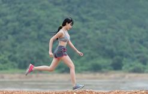
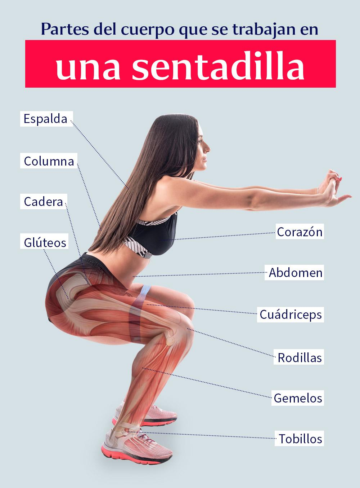
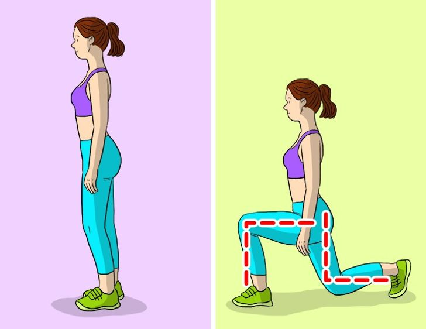
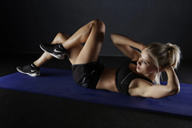
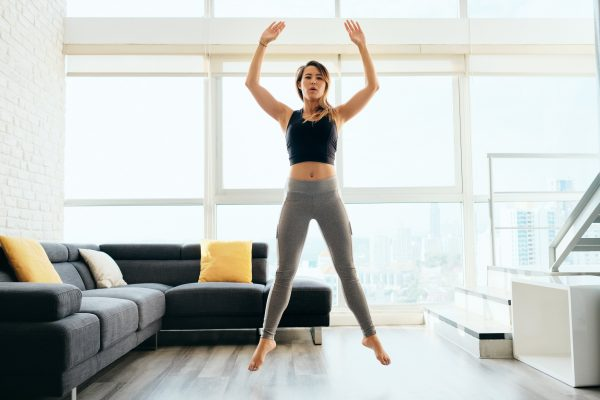

Rutinas
5 RUTINAS DE EJERCICIOS CASEROS PARA COMENZAR UNA VIDA SALUDABLE.
Hacer ejercicio es uno de los propósitos más deseados en el conteo de año nuevo; sin embargo, sólo el 20% mantiene su cometido por más de 1 mes.
El problema radica en definir el ejercicio como ir al gimnasio y hacer rutinas de fuerza, cuando no es así. Ejercitarte incluye toda actividad física que, al ser realizada constantemente, brinde beneficios a tu salud.
México ocupa el primer lugar en obesidad y enfermedades cardiovasculares en el mundo, debido a la falta de actividad física. Muchas personas, ponen como excusa que no hay tiempo o dinero suficiente para hacer ejercicio, por ello, te presentamos 5 actividades que puedes hacer en tu hogar u oficina, para comenzar a adoptar el hábito del ejercicio.
1.Caminar
Caminar todos los días al menos 30 minutos, reduce el riesgo de sufrir enfermedades cardiovasculares. Para que esta actividad funcione de forma efectiva, debes realizar la caminata de manera continua, es decir, 30 minutos completos y sin interrupciones. Puedes comenzar con un paso normal y con el tiempo, incrementar la velocidad.
2.Subir las escaleras
Subir las escaleras de tu casa u oficina en lugar de utilizar el elevador, es una excelente opción para comenzar a ejercitarte. Comienza subiendo 2 o 3 pisos y con el paso del tiempo incrementa el número de escalones a subir.

3.Mejor condición física
Si cuentas con una mejor condición física, saltar la cuerda durante 15 minutos, brindará grandes beneficios a tu salud. Además de quemar calorías de forma rápida, ya que es un ejercicio cardiovascular, mejora tus reflejos y procesos de respiración. Comienza saltando de forma suave y a un ritmo moderado. Con el tiempo y de acuerdo con cómo te sientas, incrementa la velocidad y la altura de tus saltos.
4.Andar en bicicleta.
El ciclismo es un excelente ejercicio para comenzar a adoptar un estilo de vida más saludable, ya que no requiere gran esfuerzo físico y es sumamente divertido y práctico. Si te es posible, sustituye dos días a la semana tu manera de transportarte utilizando la bicicleta. Cada dos semanas, incrementa 1 día de uso de bici; verás que además de perder peso y ganar flexibilidad, ahorrarás bastante dinero.
5.Si ya has realizado ejercicio, esta rutina es ideal para ti:
● 15 sentadillas (3 series con espacio de 1 minuto)

● 15 flexiones/desplantes (3 series con espacio de 1 minuto)

● 15 abdominales (3 series con espacio de 1 minuto)

● 15 saltos suelo/cielo (3 series con espacio de 1 minuto)
